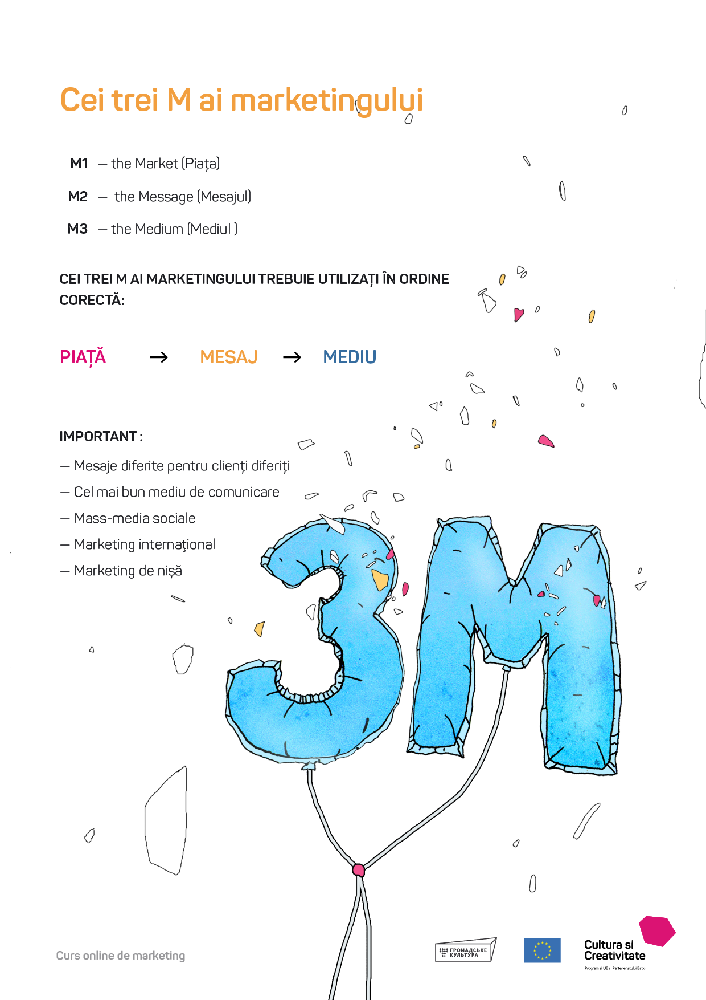
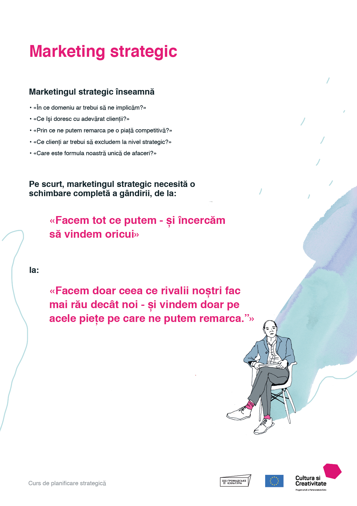

Ce este marketingul?
Unii folosesc termenul ”marketing” ca și cuvânt la modă pentru ”vânzare”. Desigur, vânzarea face parte din procesul de marketing, dar marketingul este mult mai mult decât atât. Alții utilizează acest termen pentru toate tipurile de promovare și publicitate. Iarăși, acestea fac parte din marketing, dar nu reprezintă totul.
De fapt, marketingul este ceva mult mai vast decât promovarea, publicitatea și vânzarea. În sensul cel mai complet, marketingul este un termen general care include poziția unei întreprinderi printre concurenții de pe piață, avantajul său competitiv și selectarea unor segmente de piaţă viabile pe care se va concentra.
Dacă au fost selectate anumite segmente de piaţă (și acestea au fost alese în mod pozitiv pentru a le evita pe altele), marketingul mai include comunicarea cu clientela de pe piețele selectate.
Această comunicare este un dialog, nu un monolog. Cu alte cuvinte, marketingul include ascultarea clienților - sau cercetarea pieţei.
Abia apoi vom trece la formularea unor mesaje precise, adaptate la necesităţile diverselor tipuri de clienți. Fiecare din aceste mesaje este transmis apoi utilizând cel mai potrivit mediu în situația respectivă.
Aceste mesaje concrete de marketing sunt create și transmise conform unei tehnici numite ”cei trei M ai marketingului”.
Deci trebuie să înțelegem că marketingul este mult mai mult decât promovare și vânzare. Este un mod de a analiza întreaga activitate în raport cu piețele. Utilizând toată gama instrumentelor de marketing, putem avea succes evitând în mod eficient concurenţii și deservind cu efect clientela.
Pentru ca întreprinderea noastră să aibă succes, trebuie să utilizăm toate aspectele marketingului: marketing strategic, analiza concurenţilor, poziţionarea pe piaţă, cercetarea de piață și, în sfârșit, transmiterea mesajelor de marketing.
Iată ce înseamnă marketingul.
Valorificați la maximum ceea ce poate oferi marketingul, pentru ca întreprinderile creative să se dezvolte cu mai mult succes.
Strategia de marketing
STRATEGIA DE MARKETING ESTE O FORMULĂ UNICĂ PENTRU FIECARE ÎNTREPRINDERE, AVÂND LA BAZĂ ÎNȚELEGEREA MISIUNII, A POZIȚIEI PE PIAȚĂ ÎN RAPORT CU CONCURENŢII ȘI A CLIENTELEI SELECTATE CU ATENȚIE.
Marketingul include nu doar comunicare și cercetare de piață, dar și marketingul strategic. De fapt, marketingul strategic trebuie să fie primul. Trebuie să luăm deciziile esenţiale privind direcția și orientarea întreprinderii pe piață înainte de a ajunge la detalii despre mesaje, promovare și vânzare.
Marketingul strategic trebuie să fie aliniat complet la planificarea strategică a întreprinderii. Acesta începe prin clarificarea misiunii, viziunii și valorilor întreprinderii. Apoi aceste elemente fundamentale oferă o bază solidă pentru decizii privind strategia de marketing.
Mai departe, trebuie să confirmăm că piața este foarte competitivă. Unii rivali sunt mai buni decât noi la producerea unor bunuri sau la prestarea anumitor servicii, sau la acoperirea unor nişe de piaţă. Am putea decide să concurăm direct cu ei. Sau, mai strategic, îi putem evita și ne putem concentra doar pe lucrurile pe care le facem mai bine decât ei. Întrebarea nu este ”ce putem face cel mai bine?”, ci ”ce putem face cel mai bine în raport cu concurenţii?”. Este vorba despre identificarea și utilizarea avantajului competitiv pe care îl avem. Apoi ar trebui să ne axăm pe ceea ce excelăm în comparație cu rivalii.
După aceea trebuie să găsim segmentele sau nișele de piaţă care caută lucrurile la care suntem foarte buni. Succesul nostru constă în găsirea și deservirea clientelei care are nevoie și dorește ceea ce avem. Asta nu înseamnă să încercăm să vindem tuturor - este o greșeală fatală. În schimb, trebuie să ne concentrăm doar pe clienții potriviți, ignorând deliberat piețele și segmentele în care nu putem reuși.
Astfel, o strategie de marketing reușită întrunește trei elemente esenţiale într-o formulă de succes. Primul - misiunea noastră; al doilea - avantajul competitiv; al treilea - segmentele de piaţă selectate care vor absorbi produsele la care noi excelăm.
Ascultarea clienților
MARKETINGUL PRESUPUNE SĂ ASCULTĂM CLIENȚII ȘI SĂ VORBIM CU EI. O CERCETARE DE PIAȚĂ POATE FI IEFTINĂ ȘI SIMPLĂ. TEHNICILE POT FI ELABORATE DUPĂ CE AM ADOPTAT ATITUDINEA CĂ PUTEM AFLA IDEI UTILE ȘI OPINII DE LA CLIENȚI.
Prefer să folosesc termenul ”ascultarea clienților” deoarece termenul cercetare de piaţă este asociat în mintea oamenilor cu acţiuni costisitoare și complexe întreprinse de companii mari. În consecință, multe întreprinderi mici din sectorul creativ consideră că nu au timp sau bani pentru a face o cercetare de piață.
Totuși principalul obstacol pentru o cercetare de piață nu este timpul sau banii, ci aroganța. Dacă credem că știm totul despre afacerea noastră și nu avem nimic de învăţat de la clienți, atunci nu-i vom asculta niciodată. Dacă credem că știm deja totul despre ceea ce apreciază clienții noștri, despre prețurile pe care le vor plăti ei și îmbunătăţirile pe care le-ar dori ei, nu are sens să îi ascultăm.
Pe de altă parte, dacă îi privim ca parteneri pe clienţii noștri selectaţi și evaluați, vom dori să aflăm ce gândesc. Dacă înţelegem că ei pot privi produsele noastre altfel decât noi, vom fi curioși să cunoaștem diversele lor perspective. Dacă considerăm că clienţii noştri pot avea idei bune pe care le putem utiliza, ar fi absurd să nu-i întrebăm.
Ne putem folosi creativitatea pentru a găsi metode inteligente, simple și accesibile de a asculta sistematic clienții și a utiliza ideile și opiniile lor.
Putem cere clienților părerea despre produsele noastre, îi putem ruga să propună îmbunătățiri, putem întreba ce le place cel mai mult. Putem folosi chestionare online sau putem discuta cu ei; putem organiza un grup tematic informal al clienților sau un forum al utilizatorilor. Există multe metode pe care le putem aplica dacă ne folosim imaginația.
Pe scurt, putem dezvolta întreprinderile creative ascultând segmentele de piaţă selectate și considerându-i drept parteneri pe cei mai valoroși clienți ai noștri.
Beneficii pentru clientelă
ESTE VITAL SĂ COMUNICĂM MAI MULT DESPRE PĂREREA CLIENTULUI DECÂT DESPRE PERSPECTIVA NOASTRĂ PRIVIND PRODUSELE.
Trebuie să evidențiem beneficiile clientului, pe baza unei cunoașteri aprofundate a ceea ce el cumpără de fapt de la noi.
Putem descrie întreprinderea noastră și produsele oferite de noi din două perspective: a noastră sau a clientului.
În mare măsură, marketingul înseamnă studierea pieței din perspectiva clientului. De fapt, s-a afirmat că marketingul nu este o activitate aparte a unei întreprinderi - este întreaga întreprindere văzută prin ochii clienților noștri.
Ușor de spus, dar greu de făcut. Evident, noi privim întreprinderile creative din perspectiva noastră, deoarece suntem în interiorul lor. De asemenea, știm multe despre procese, creativitate, metode și alte detalii ale activității noastre.
Dar ce îl interesează pe client? Clientul este interesat doar de ceea ce putem face pentru el. Noi vorbim despre caracteristicile produselor noastre, dar clientul vrea să știe doar care sunt beneficiile - la ce îi ajută.
Dacă noi vorbim despre produsele noastre, iar reacția clientului este ”ei, și ce?!”, atunci s-ar putea să fi vorbit despre caracteristici, nu despre beneficiile clientului.
Pentru a putea comunica eficient beneficiile clientului, trebuie să privim lucrurile din perspectiva clientului. Asta înseamnă să ne punem în locul lui, să ne privim afacerea din exterior, nu din interior.
Evident, aceasta înseamnă să ascultăm clienții înainte de a le vorbi. Astfel putem înțelege mai complet perspectiva lor, necesităţile lor, preferințele lor și tot ceea ce îi interesează pe ei. Astfel putem înțelege mai profund și mai precis ce cumpără clientul de la noi - poate el nu cumpără chiar ceea ce noi credem că vindem. Uneori el cumpără beneficii nemateriale, de exemplu un statut oarecare, un simț al comunității sau un alt ”factor de confort”.
Doar atunci când înțelegem punctul de vedere al clienților noștri putem să le vindem ceva, punând accent pe ceea ce ei apreciază - beneficiile pentru ei.
Cei trei M ai marketingului
ACEASTA ESTE O TEHNICĂ SIMPLĂ DAR REDUTABILĂ DE COMUNICARE EFICIENTĂ CU CLIENTELA.
În primul rând se identifică piața specifică (Market), apoi se formulează Mesajul precis, și în final se alege Mediul optim de transmitere a mesajului.
Este o tehnică deosebit de simplă și foarte eficientă. Oricine trebuie să fie de acord cu logica sa. Totuși, majoritatea greșelilor și eșecurilor în comunicarea de marketing sunt rezultatul ignorării acestei metode.
În primul rând, pentru fiecare produs sau serviciu, se identifică piaţa-ţintă – sau eventual mai multe piețe. Acesta este M1: Piața (Market).
În al doilea rând, pentru fiecare piață se formulează un mesaj. Dacă există piețe diferite pentru un produs, fiecare piață poate necesita un mesaj aparte. Desigur, mesajul trebuie să evidențieze beneficiile pentru client. Acest Mesaj este M2.
M3 este Mediul. Acesta este mijlocul pe care îl vom utiliza pentru a transmite fiecărei piețe mesajul său. Mediul trebuie ales, fiindcă este cel mai bun mod de a transmite un anumit mesaj unei anumite piețe. Punând accent pe clientela pieței, putem alege un mediu corespunzător acesteia.
Totul este foarte logic, deci cum ajungem să greșim?
De obicei greșeala este că cei trei M sunt abordați în ordine incorectă. Întâi se alege un Mediu, fără a lua în considerare mesajul și piața. Ne impresionează un anumit mediu și decidem să-l utilizăm, înainte de a analiza în ce măsură acesta se potrivește cu mesajul și cu piața. Asta se poate întâmpla dacă utilizăm platforme de socializare (fiindcă sunt la modă) sau o pagină web (fiindcă toți ceilalți au una) sau o broşură imprimată (fiindcă avem o ofertă specială).
Fiecare din aceste medii nu este bun sau rău în sine, ci doar în raport cu eficacitatea sa în transmiterea unui anumit mesaj către o anumită piaţă.
Așadar, atenție la ordinea în care utilizați cei trei M. Utilizând Cei trei M ai marketingului în ordine corectă, comunicarea noastră de marketing devine mai specifică, mai exactă și mai reușită.

Marketing strategic
TERMENUL ”MARKETING” ESTE ÎNŢELES GREŞIT DE OBICEI. MULȚI CRED CĂ MARKETINGUL ÎNSEAMNĂ DOAR PUBLICITATE ȘI PROMOVARE. ACESTA ESTE DOAR UN ASPECT AL MARKETINGULUI, ADICĂ „MARKETINGUL OPERAȚIONAL“ SAU „COMUNICAREA DE MARKETING“.
Marketingul strategic se referă la imaginea de ansamblu și la deciziile importante, cum ar fi:
• În ce domeniu ar trebui să ne implicăm?
• Ce îşi doresc cu adevărat clienții?
• Prin ce ne putem remarca pe o piață competitivă?
• Ce clienți ar trebui să excludem la nivel strategic?
• Care este formula noastră unică de afaceri?
Marketingul strategic presupune recunoașterea concurenței, identificarea avantajului competitiv și, ca rezultat, participarea pe piețe în care puteți fi mai buni decât rivalii dvs. La fel, trebuie să decideți ce piețe veți evita pentru că rivalii dvs. sunt mai buni.
Acest lucru necesită atât înțelegerea exactă a cerințelor pieței, cât și disponibilitatea de a adapta activitatea și produsele acesteia la nevoile clienților selectați (în loc să încercați adaptarea clientului la produsele și serviciile întreprinderii.)
Marketingul strategic este nucleul elaborării unei formule de afaceri fezabile, deoarece formula de afaceri trebuie să țină cont de avantajul competitiv al întreprinderii și de decizia acesteia de a participa doar pe anumite piețe.
Pe scurt, marketingul strategic necesită o schimbare completă a gândirii, de la:
”Facem tot ce putem - și încercăm să vindem oricui”
la
”Facem doar ceea ce rivalii noștri fac mai rău decât noi - și vindem doar pe acele piețe pe care ne putem remarca.”
Doar după convenirea asupra aspectelor importante ale strategiei de marketing putem trece la detaliile marketingului operațional (comunicării de marketing).
Dacă am decis pe ce piețe ne vom concentra, ne putem adapta mesajele la necesităţile concrete ale clienților selectați.
În plus, putem asculta clienții de pe piețele alese, pentru a înțelege mai bine ce doresc cu adevărat să cumpere.
Marketingul poate fi descris ca ”studierea pieței din perspectiva clientului”.
Sau, cum spunea Peter Drucker, marele expert în marketing:
”Marketingul nu este doar cu mult mai extins decât vânzarea, fiindcă nu este deloc o activitate specializată. Marketingul acoperă întreaga activitate. Este toată afacerea, privită din perspectiva rezultatului său final, adică din perspectiva clientului.”
În cele din urmă, marketingul strategic se referă la alinierea în mod deliberat a întregii întreprinderi la necesităţile în schimbare ale unor clienți selectați cu grijă. Aceasta înseamnă că evităm în mod intenționat unele piețe, cu scopul de a ne concentra pe piețe, nișe de piață și clienți selectați la nivel strategic.
Prin urmare, marketingul strategic presupune decizii la nivel înalt privind orientarea întreprinderii, în timp ce aceasta evoluează cu succes față de concurenţi, își folosește avantajul competitiv și selectează anumite grupuri de clienți pentru a-și atinge obiectivele și viziunea.
David Packard, fondator al companiei Hewlett Packard, spunea: ”Marketingul este prea important pentru a rămâne la nivelul departamentului de marketing.”
